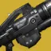

推荐者：
错令晚星绘天明牢大术士
 术士 · 烈日 · 创意S29 · 凯旋纪念碑
术士 · 烈日 · 创意S29 · 凯旋纪念碑
烈日凌空
适用环境
# 牢大术士 推荐人：错令晚星绘天明 描述：烈日凌空 更新：2026.9.10 场景：日常 分支：烈日 强度：创意 核心：法定继承人 ## 职业 职业：术士#row:elements/class-abilities/分节/术士 超能：黎明#2274196886 星相：伊卡洛斯突进#83039195、炙热升腾#83039194 碎片：焦燃余烬#362132293、至高天余烬#362132294、火炬余烬#362132288、炽热余烬#1051276351、骨灰余烬#1051276349 手雷：治愈手雷#1841016428 近战：星界之火#1470370539 职业技能：凤凰俯冲#1444664836 ## 武器 异域武器：法定继承人#2084878005 传说武器：庆典飞行#4019651319 | 切割#923806249、羸弱能量球#243981275 传说武器：Ψ永恒 IV#135971347 ## 护甲 异域护甲：神圣黎明之翼#1179169099 套装：埃希恩记忆#set:741162535 2 件 × 埃希恩记忆#set:741162535 4 件 头盔：虹吸#4294967298、超能洗礼#1130820873、拳到力来#3938489430 护臂：谐振装弹装置#2657604783、手雷洗礼#1781551382 胸甲：弹药生成#1971149752、完全充能#2577472338 腿部：元素充能#3712696020、谐振回收器#1301391064 职业物品：收割者#40751621、特殊终结技#4004774872 ## 神器 神器：女王兰香炉 模组：发热寒颤#3153265450、烈焰之心#3547711348、瓦解能量球#51032919、复苏爆破#51032917、火种扳机#2317325398、精准射线#1328115226、崩解#1319563985 ## 六维 六维：生命 ~ ｜ 近战 ~ ｜ 手雷 70+ ｜ 超能 ~ ｜ 职业 ~ ｜ 武器 150+ ## 注解 纯娱乐配装，利用法定继承人满血获得蓝盾和炽热升腾空中击杀获得恢复的星象进行作战，适合大量堆红血怪的环境，对于橙血输出较为乏力，使用2号位武器进行补足输出（实际上这配装就不应该用于对付橙血怪）
职业
武器
神器模组
护甲
- 生命~
- 近战~
- 手雷70+
- 超能~
- 职业~
- 武器150+
注解
纯娱乐配装，利用法定继承人满血获得蓝盾和炽热升腾空中击杀获得恢复的星象进行作战，适合大量堆怪的环境，对于输出较为乏力，使用2号位武器进行补足输出（实际上这配装就不应该用于对付怪）